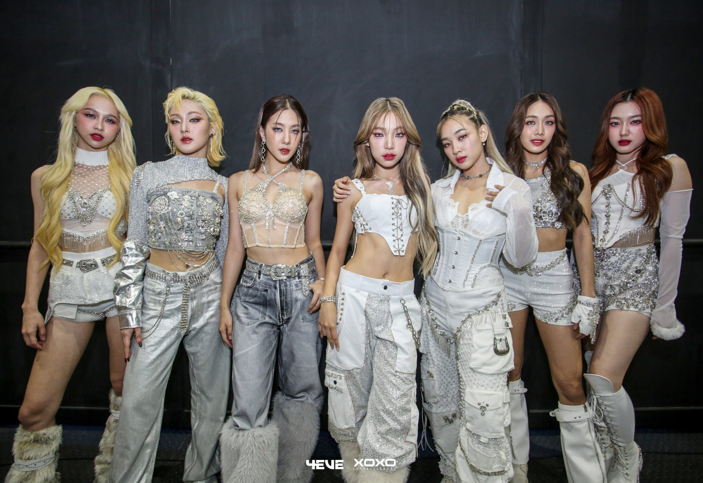

คอนเสิร์ต4eve
ชื่อ
วันที่
สถานที่จัด
เมือง
ผู้ชม
อ้างอิง
4EVE 1st Year Anniversary Meet & Greet
23 ธันวาคม 2564
ลิโดคอนเน็ค
สยามสแควร์
กรุงเทพมหานคร
200 คน
[15]
4EVE The 1st Concert Friends & Family
17-18 ธันวาคม 2565
ศูนย์การประชุมแห่งชาติสิริกิติ์
กรุงเทพมหานคร
~5,000 คน (ต่อวัน)
[16]
[17]
4EVE Concert NOW OR NEVER Live at Impact Arena’
10 กุมภาพันธ์ 2567
อิมแพ็ค อารีน่า
นนทบุรี
~10,000 คน
[18]